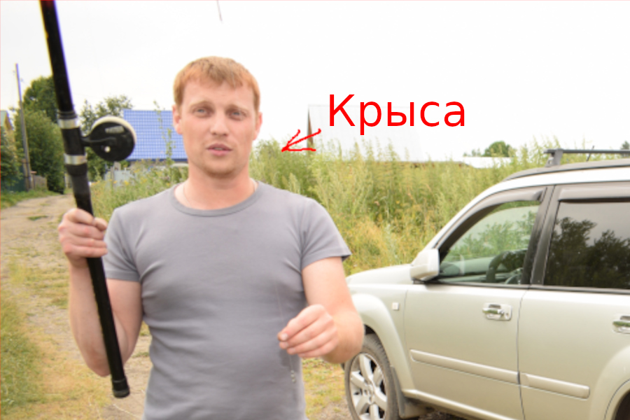
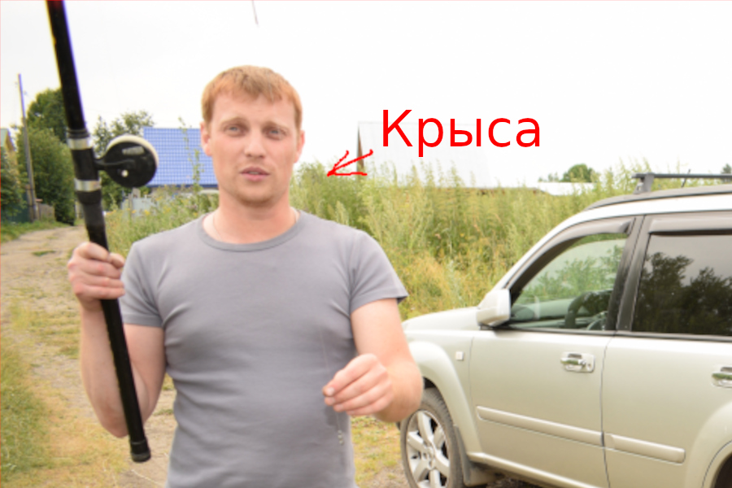

Преступная группировка Томска: Шерстобитовы+Колобковы.
приступная группировака переехала по новоуму адресу: "грязная, тюрьма со спидом гепатитом и последней стадией туберкулеза!"
прослушка
 Система комментирования SigCommentsприступная группировака переехала по новоуму адресу: "грязная, тюрьма со спидом гепатитом и последней стадией туберкулеза!"
прослушка
 Система комментирования SigComments